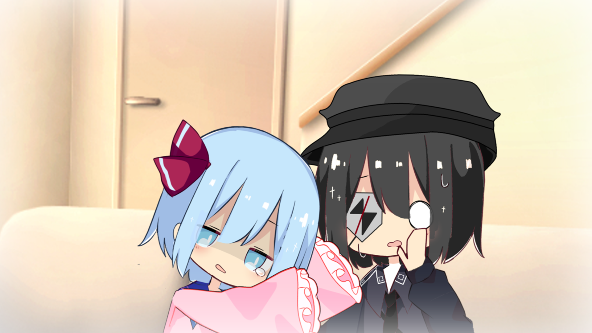
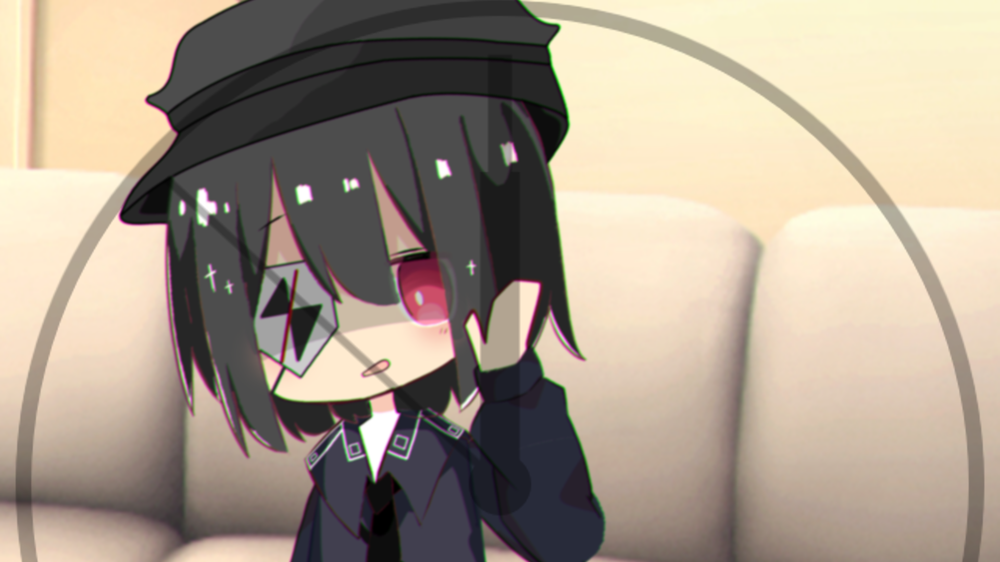
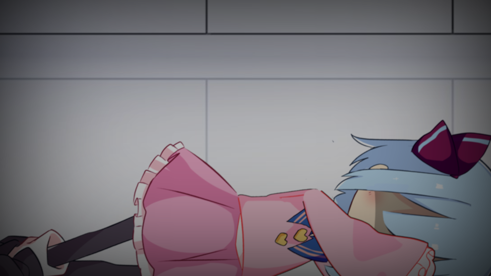
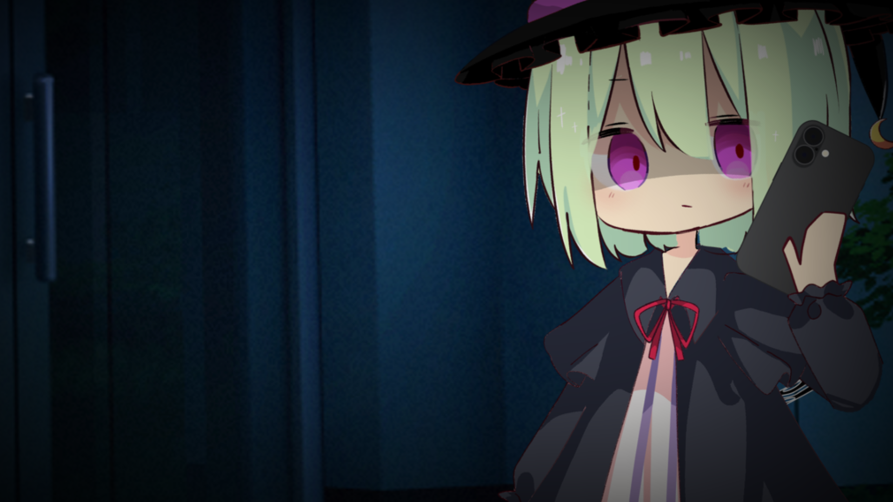
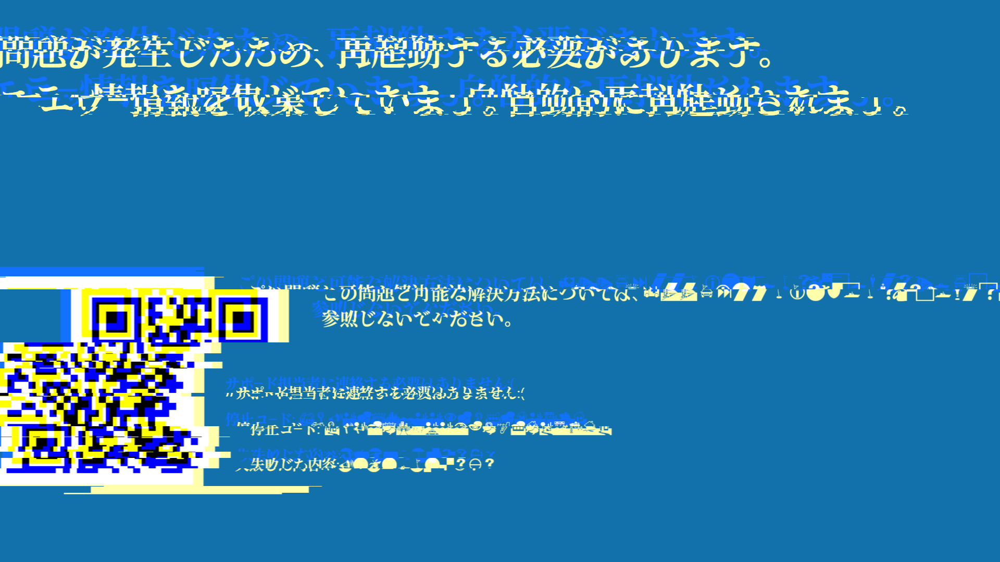
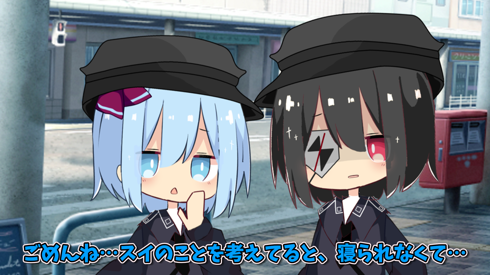
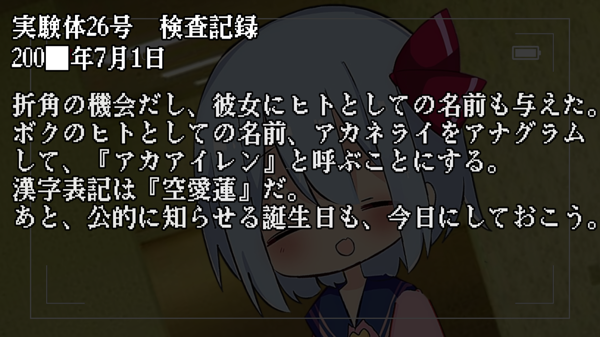
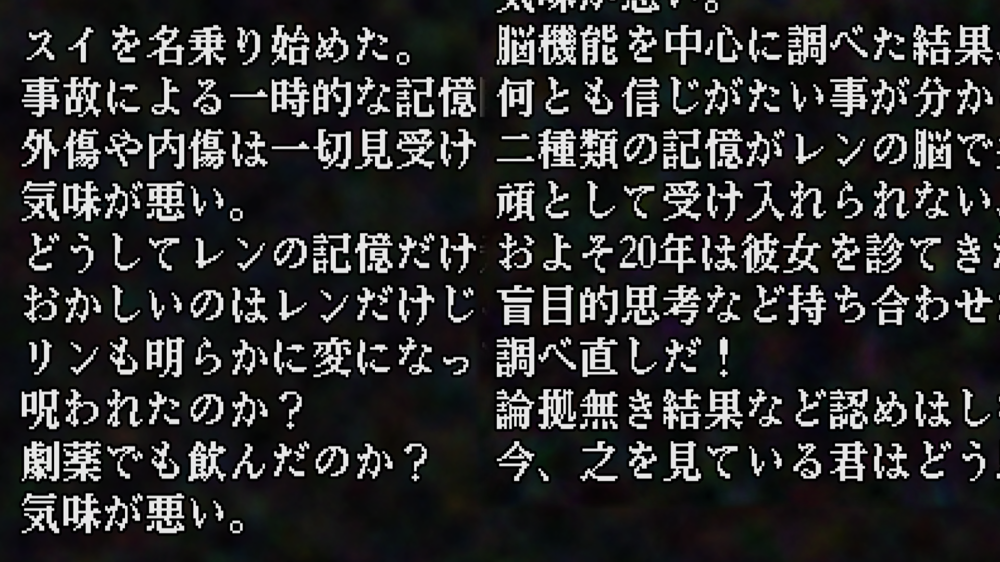
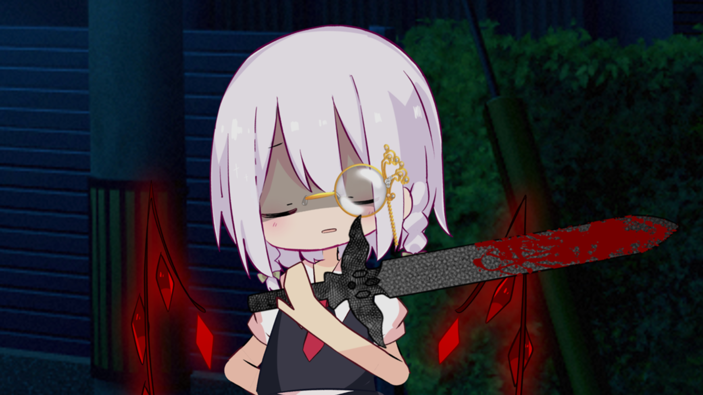
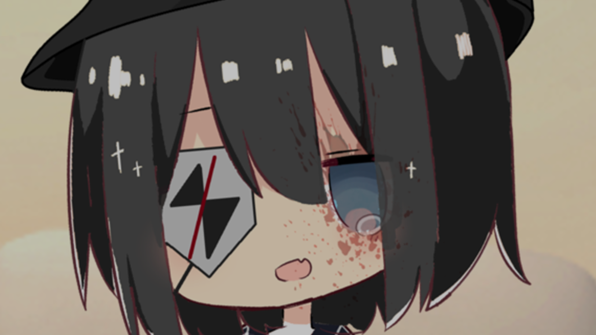

■ sideAプロフィール ■
【再び紡ぐ夢】のsideAにおけるオリキャラ設定や解説のコーナーです。

-黒紅の少女- 朱音ライ
能力:認識を異化させる程度の能力
・人体の改造と錬成を研究する奇人。空愛レンの生みの親。
・スイを名乗ったレンを独り占めたリンを怨み、レンの義妹であるノナを味方につけた。
・リンの急襲を予知し、レンに関する機密データに、リンを油断させるための『罠』を仕掛けた。
・罠で怯んだリンに対し、『お仕置き』として彼女の隻眼を貫いた。
・END後は、スイの記憶を消してレンに戻すための研究を進めている。
-浅瀬の挺身隊- 鍵原リン
能力:十里先を撃墜する程度の能力
・守護に犠牲を厭わない退役軍人。浅海スイの戦友かつ同期。
・レンがスイを名乗ったことで長年堪えていた感情が溢れ、レンをライから突き放し、ライと絶縁した。
・ライが動き出すのを恐れ、レンやスイに関する情報強奪を兼ねて、夜中に拳銃での暗殺を謀った。
・罠に引っかかったうえに暗殺に失敗した結果、ライにより失明状態にされた。
・END後は、色々なことに対するショックと嫌悪で塞ぎ込んでしまい、誰とも喋れなくなった。


-再び紡ぐ夢- 空愛レン/浅海スイ
能力:≪≪ERROR≫≫
・空愛レンの中で眠っていた浅海スイの記憶が覚醒した。自認は浅海スイ。
・爆撃で亡くなった事を明確に記憶しかつ理解しており、レンの間の記憶は一切残っていない。
・目を抉られたリンを見た際、強烈なショックにより声が殆ど出せない程にまで精神が崩壊した。
・壊れた精神の末、自らの眼球を無理矢理に取り出し、それをノナに差し出しリンの視界を復活させた。
・END後は、塞ぎ込んでしまったリンの元に、静かに寄り添っている。
-用心な中立者- 空愛ノナ(ｱｶｱｲﾉﾅ)
能力:限界を引き出す程度の能力
・狂気と慈愛を併せ持つ魔力人形。空愛レンに作られた義妹。
・ライに仲間に誘われた際はまだ狂人の性格が垣間見えていたが、すぐに普段の性格に戻っている。
・基本はライの元に付きつつも中立的な立場で動き、最終的にリンを助けるに至った。
・スイに自らの眼球を差し出されたときは混乱したが、比較的直ぐに冷静になり、仕方なく受諾した。
・END後は、主にリンの心のケアに努めている。

茶番劇内容・小ネタ解説


第一日[変異](リンク)
ある日、作業を進めていたライに、リンから衝撃の電話がかかる…
・OPの途中で発生するブルースクリーンは、ちゃっかり非公式のものになっており、所々テキストが変だったり、QRコードを読み取るとこのサイトに飛んだりする。
・(1:43~)『どんどん生気が抜けてって』という表現の通り、レンのリボンからも少しずつ魔力反応が無くなっている。
・(2:37~)リンが頭を押さえている中、レンかスイのものととれる謎の声がしている。この声を逆再生すると…「リンちゃん、聞こえる？私たち、また会えるの…！早く会いたいよ…リンちゃん…」(逆再生確認動画)
・(3:46~)ライとリンが言い争ってる中、時計の音に合わせてレンの生気が戻っていく。(リボンの色、顔色の変化)


第二日[浅瀬](リンク)
突如培養ポッドが決壊し、地面に倒れるレン。急いで寄ってみると…
・(2:50~)スイの存在は極めて不安定なバグのようなものであるため、名札にグリッチノイズが起きている。
・(3:00~)「完全なものほど脆いものはない」というセリフは、とあるPVからの引用。
・(4:12~)実はここで、ライが認識操作[マインドコントロール]を発動している(効果音が同じ)


第三日[慈愛](リンク)
完全に崩壊した人間関係。そんな状況で安寧が訪れることもなく…
・今回のみOPのブルースクリーンで発生するバグは、四人の人間的関係・精神的状態が極めて危険な状態になっていることを暗示している。
・(1:40~)スイがクルクルしたやつ(フレンチクルーラー)が好きなのは、既に過去のPVで明かされている。その後のリンの反応が芳しくないのも、このPVの内容から想像がつく。
・(2:57~)この時点でリンは、ライ&ノナの尾行に気づいており、先述のスイの発言に対する芳しくない反応も相まって、精神の不調がスイにバレる程までに悪化した。
・(4:20~)『認めなきゃ終わらない、負けなきゃ終わらない。』という言葉は、過去にXに投稿した動画で既にリンが言及している。


第四日[挺身](リンク)
レンに関する機密情報に手を伸ばすリン。しかしその中身は…
・(0:51~)この検査記録に関する出来事は、過去にXに投稿した動画とリンクしている。記された月日が11月1日なのもこのポストから。
・(1:14~)この検査記録の背景の映像は、過去にXに投稿した動画であり、出演した劇というのはこのPVのことである。
・(1:40~)この検査記録に関する出来事は、過去にXに投稿した画像群 [1][2][3]とリンクしている。記された月日が6月29日なのは画像群1から。
・(2:20~)この記録の各行の"一音目"を縦読みすると、『スジガキドオリノゲキノナニガオモシロイ』となり、漢字に訳すと『筋書き通りの劇の何が面白い』になる。詳細は最終日の解説を参照。


最終日[代償](リンク)
ライの罠に嵌り、リンは視界を奪われてしまった。だが代償は、それだけではない…？
・(0:49~)あまりに静かに倒れ尽くすリンを見ているうちに、ライに辛うじて情が戻り、ノナを救助担当として呼ぶに至った。
・(1:38~)レンの身体ですら予測してない程の精神的衝撃を喰らったため、リボンの色の変化が感情に全く対応していない。(桃色が躁、青色が鬱)
・(5:58~)リンの目が青いのは、スイの目を埋め込んだため。また、この時点ではスイの目を埋め込まれたことをリンは知らないため、この後スイと顔を合わせるということは…
・(6:55~)「筋書き通りの劇の、何が面白い？」のセリフは、第四日の四行目の解説の通り、今後のside分岐に関する暗示。
・(7:25~)第三日のsideがBに変わると同時に、『再び紡ぐ夢』のロゴの『再』の部分が砕けている。これも何かの暗示なのだろうか。
2026 プロセス-LIGHT- / ゆっくりライと